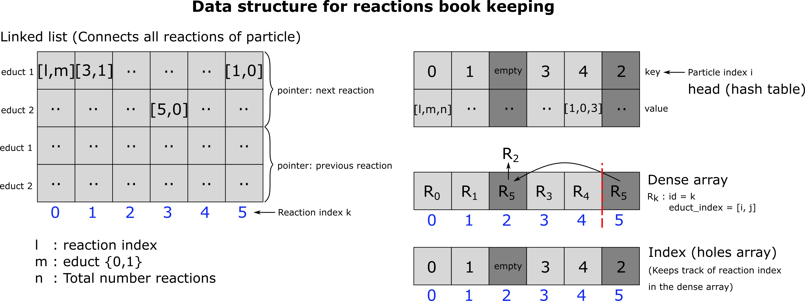

reactions_registry_util
Short description
Reaction
- class pyrid.reactions.reactions_registry_util.Reaction(*args, **kwargs)
The reaction class stores all particle and molecule reactions of the current time step. At its core the Reaction class is a dense dynamic array (i.e. elements are deleted via a pop and swap mechanism). It also keeps another dynamic array with holes that keeps track of where a reaction moves during swaping. This is necessary, beacause we also store each reaction by its id in a doubly linked list that contains for each particle all its reactions. This doubly linked list is needed whenever we delete all reactions of a certain particle, in which case we need to be able to recover the position of a reaction id in the dynamic array. Also, the elements of the doubly linked list have shape (2,2), each for the next and prev pointer. The first dimension has two elements since a reaction can be assigned to at max two educts (for bimoelcular reactions). Therefore, these two integers point to the next (previous) reaction id belonging to each of the educts. The two elements of the second dimension are required, beacuse we need to be able to track the position of particles i and j in the linked list, which can in principle switch between two positions (to which reaction id should the next pointer go? There are always two possibilities). Thereby, the other two ints store, whether the next (prev) pointer target element 0 or 1.
Notes
The data structure we need to organize the reactions is a little bit more complex than a simple dense dynamic array or one with holes as is used to keep track of all the rigid body molecules and particles in the sytsem. The Reaction class is a combination of different dynamic arrays and a hash table. Let me motivate this: Our data structure needs to be able to do 4 things as efficient as possible:
Add reactions,
Delete single reactions,
Delete all reactions certain particle participates in,
Return a random reaction from the list.
We need to be able to delete a single reaction whenever this reaction was not successful. We need to delete all reactions of a particle whenever a reaction was successful, because this particle is no longer available since it either got deleted or changed its type (except in the case where the particle participates as an enzyme). We need to be able to request a random reaction from the list, because processing the reactions in the order they occur in the list will introduce a bias: Reactions of particles with a low index are added to the list first, at least in the beginning of a simulation when the indices of particles have not yet been swapped around (in case there are any decay reactions), beacuse particle distances are evaluated in the order particles occur in the corresponding list. Thereby particle 1 will always have a higher chance of having a successfull reactions when competing with other particles. Points 1. an 2. could be easily established with a simple dynamic array. However, point 3 is a bit more complicated but can be solved with a doubly linked list, embedded into a dynamic array with holes, that connects all reaction of a particle. We need a doubly linked list, because we need to be able to delete a single reaction (index k) fom the linked list (point 2). As such, we need to be able to reconnect the linked list’s ‘chain’. Therefore, we need to know the element in the linked list that pointed to k (prev) in addition to the element k points to (next). Another problem that needs to be solved is that a reaction can be linked to at max. 2 educts. Therefore, each next and prev pointer needs to be 4-dimensional. We need 1 integer for each educt to save the next (prev) reaction index and another integer {0,1} to keep track of whether in the next (prev) reaction the particle is the first or the second educt since this may change from reaction to reaction! Since the dynamic array, the doubly linked list is embedded in, has holes, picking a random reaction from the list becomes another issue. This can, however, easily be solved by adding another dynamic array (dense array), which keeps all the reactions that are left in a tightly packed format. Picking a random reaction is that as easy as drawing a uniformly distributed random interger between 0 and n, where n is the length of the dense array. A very nice introduction/overview to the kind of data structures used here has been written by Niklas Gray (see https://ourmachinery.com/post/data-structures-part-1-bulk-data/)
The figure depicts the data structure we use to keep track of the reactions.
- Attributes
- eductsnb.int32[:]
Educt type ids.
- productsnb.int64[:]
Product type ids.
- ratenb.float64
Reaction rate.
- radiusnb.float64
Reaction radius.
- current_indexnb.uint64
Current/last assigned slot of dynamic array (main -> dense_array_react())
- reaction_typenb.types.string {‘bind’, ‘enzymatic’, ‘conversion’, ‘decay’, ‘enzymatic_rb’, ‘conversion_rb’, ‘fusion’}
Name of reaction type
- reaction_type_idnb.int64 {0,1,2,3,4,5,6,7}
ID of reaction type
- pathsarray_like
Reaction path.
dtype = np.dtype([(‘rate’, np.float64), (‘products’, (np.int64, (100,3))), (‘n_products’, np.int64),], align=True)
- n_pathsnb.int64
Number of reaction paths defined for this reaction.
Methods
add_path(products, rate)
Adds a reaction path to the reaction.
re_initialize()
Reinitializes the dense dynamic array saving all reactions occuring within a timestep, reseting the array size and deleting all linked lists containg reaction data.
append_reaction(i,j, Particle_Reaction)
Appends a new reaction to the reactions list.
delete_reaction(k, Particle_Reaction)
Deletes reaction at index k.
delete_reaction_all(i)
Deletes all reactions of Particle i assigned for the current time step.
get_random()
Returns a random reaction id.
getit(k)
Returns reaction data inserted at index k.
setit(k, value)
Assigns anew value to reaction at index k.
reactions_left()
Prints out all reactions left in list.
reactions_left_pointer(Particles, i)
Prints out all reactions left for particle i.
- add_path(System, path_type, rate, products_ids=None, product_surf_vol=None, product_direction=None, radius=None)[source]
Adds a new reaction path to the reaction class instance.
- Parameters
- Systemobject
Instance of System class
- path_typestring
Type of reaction
- ratefloat64
Reaction rate
- products_idsint64[:]
List of product ids. Default = None
- product_surf_volint64[:]
List indicating whether a product is a volume (0) or a surface (1) molecule.
- product_directionint64[:]. Default = None
In case of a surface moelcule having a volume moelcule product indicates whether the product is to be released into the simulation box volume (0) or the mesh compartment (1). Default = None
- radiusfloat64
Reaction radius in case of a bimolecular/biparticle reaction. Default = None
- Raises
- ValueError(‘Number of reaction products must not be larger than 1000!’)
PyRID limits the number of product moelcules to 1000, otherwise a value error is raised. The user may rayise this limit at any time by changing the size of the structured array of dtype item_t_paths.
- ValueError(‘Reaction type unknown!’)
If a reaction type is passed that has not yet been implemented, a value error is raised.
- append_reaction(i, j=None)[source]
Appends a new reaction to the current reactions list.
- Parameters
- iint64
Index of educt 1
- jint64
Index of educt 2. Default = None
- clear()
clears the array by setting the number of currently inserted elements to 0.
- delete_reaction(k)[source]
Deletes the reaction from the list by its index.
- Parameters
- kint64
Index of the reaction which to delete
Notes
Deletes an element from the array by a pop and swap mechanism. This is a dense dynamic array. As such, elements get swapped around by a pop and swap mechanism. Element k, which is trageted for deletion may no longer be at the place where it was originally inserted. Therefore, k does not refer to the element currently at index k in the dense array but needs to be looked up in the index array (self.index), which is an array with holes, preserving the location of its elements. Element k also needs to be deleted from the index array. The index array is a dynamic array with holes. Thereby, an element is removed from the index array by creating a hole that can be reused for the insertion of new elements. The index array also holds a doubly free linked list containing all reactions belonging to a certain particle. Therefore, the doubly free linked list is also updated.
- delete_reaction_all(i)[source]
Delete all reactions educt i (molecule or particle) is involved in.
- Parameters
- iint64
Index of the educt
- get(k)[source]
Returns the data array of the reaction at index k, which contains the educt indices.
- Parameters
- kint64
Index of the reaction whose educt indices to return
- Returns
- array_like
Array containing the educt indices and other information.
Notes
Return element at index k+1 (element 0 is reserved for the head of the free list). Any item will be returned, also holes, because checking whether an item is a hole at each access operation is too expensive. Also, there will be no test, whether the index is within bounds, as this can also reduce speed by up to 25%. To get a list of all items which are not holes, use the occupied attribute!
- get_random()[source]
Return a random reaction from the list.
- Returns
- int64
Index of the random reaction.
- make_array(new_cap)
Returns a new array with new_cap capacity
- Parameters
- new_capint
array size
- Returns
- array_like
array with dtype = self.item_t
- reactions_left_pointer(i)[source]
Prints out all reactions left in the reactions list for educt of index i.
- Parameters
- iint64
Educt index
- set(k, value)[source]
Inserts the given values into the array at the position correspnding to the reaction of index k.
- Parameters
- kint64
Index of the reaction
- valuearray_like
values to insert (np.dtype([(‘educts_index’, (np.int64, (2,))), (‘id’, np.int64), (‘unique_educts_id’, np.float64)], align=True))
{kind=link}